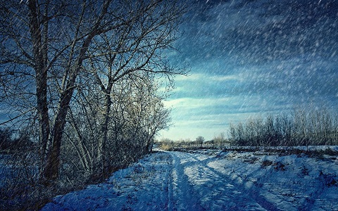

About me
In the cold of early winter, snow begins to fall—at
first slowly, melting fast, and then in big flakes, swirling and twirling. Across the glistening meadow,
in the magical moonlit night, a small bunny and his brothers and sisters explore the wonders of this
newly snow-filled world. Bernette Ford’s lyrical text and Sebastien Braun’s stunning illustrations
capture the joy and beauty of the season’s first snowfall.
In the winter, cold winds blow down
from Siberia, pick up moisture over the Japan Sea,
and drop it as snow when they strike the moun-
tains of Japan. The west coast of the main island
of Japan is probably for its latitude (roughly,
from Cape Hatteras to New York, or from Spanish
Morocco to Barcelona) the snowiest region in the
world. From December to April or May only the
railroads are open, and the snow in the mountains is
sometimes as much as fifteen feet deep. The expression “snow country,” then, does not
mean simply country where snow falls. It means
very specifically the part of the main island that
lies west of the central mountain range. It suggests
long, gray winters, tunnels under the snow, dark
houses with rafters black from the smoke of winter In the winter, cold winds blow down
from Siberia, pick up moisture over the Japan Sea,
and drop it as snow when they strike the moun-
tains of Japan. The west coast of the main island
of Japan is probably for its latitude (roughly,
from Cape Hatteras to New York, or from Spanish
Morocco to Barcelona) the snowiest region in the
world. From December to April or May only the
railroads are open, and the snow in the mountains is
sometimes as much as fifteen feet deep. The expression “snow country,” then, does not
mean simply country where snow falls.